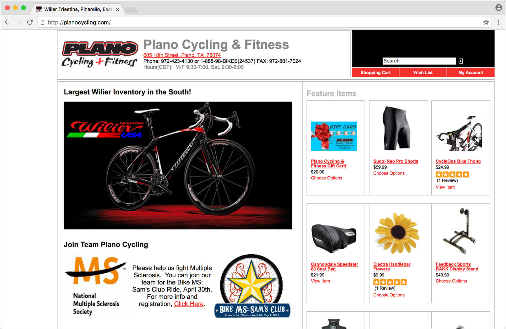
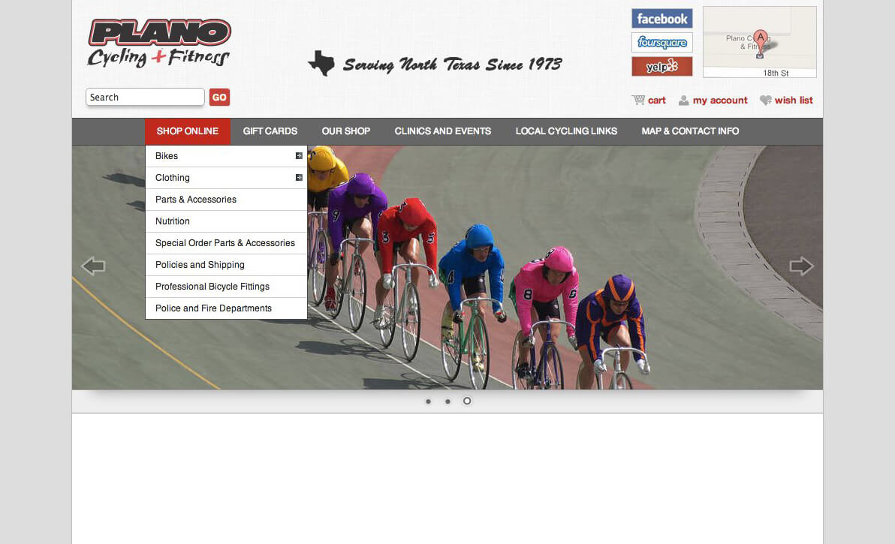
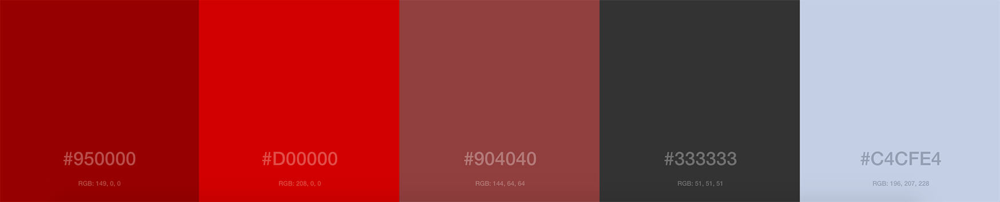
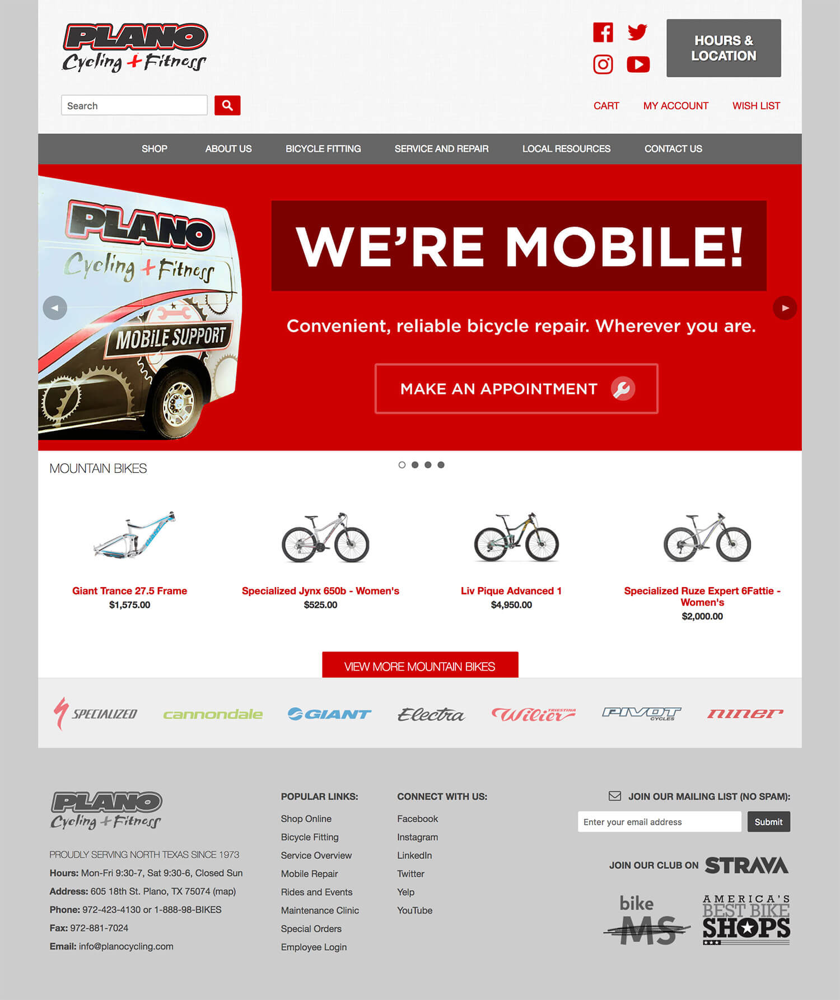
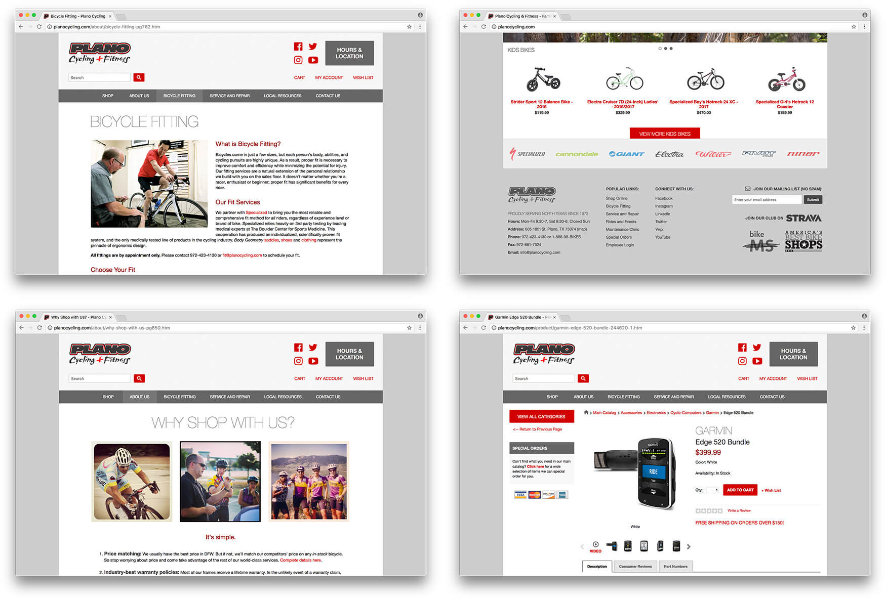
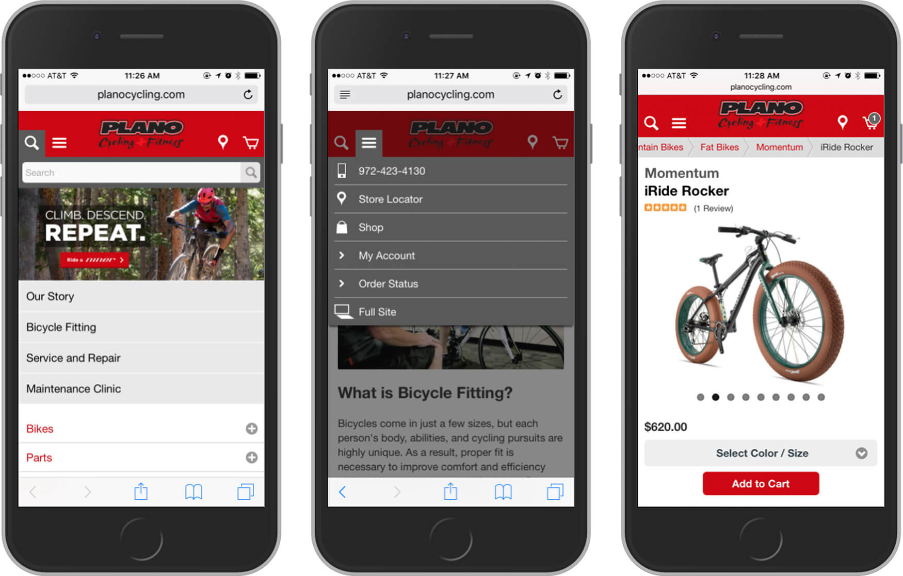
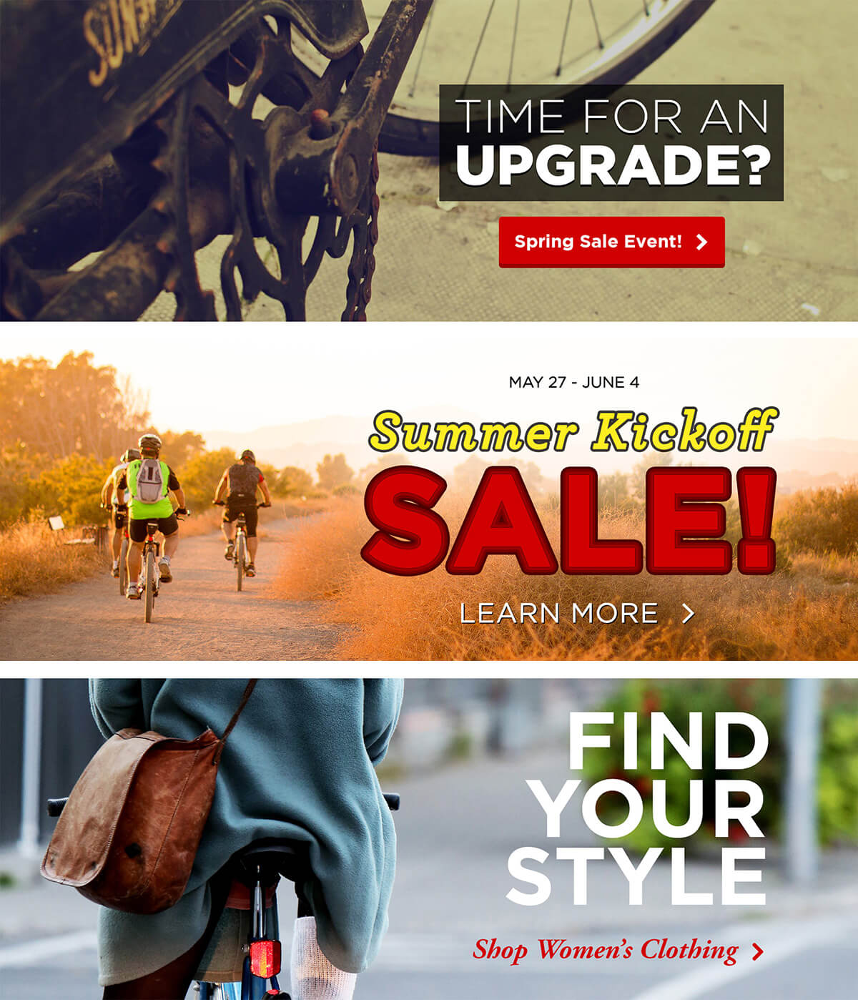

Geared for the web
I managed the Plano Cycling & Fitness website throughout most of 2013, during which I led a design and content overhaul that introduced mobile shopping, strengthened brand recognition, and multiplied online sales.
Sections on this page
Context
Plano Cycling is the highest-rated bike shop in Texas and one of the first shops in the country to take business online. They use SmartEtailing, the most popular CMS in the outdoor industry, to publish content. While basic templates are easy to set up and manage, they require a lot of front-end customization to achieve a unique look and feel; the site had utilized one of these since its inception in 1998. It was difficult to interact with on mobile devices and lacked a distinct visual language and voice.

The Plano Cycling homepage in January 2013
Goals
The in-store experience at Plano Cycling is regularly praised for the staff's exceptional customer service ethic and the shop's airy, well-organized spaces. We wanted the digital experience to replicate this as closely as possible. Specifically I set out to:
- Deploy a unique and deliberate graphical style
- Make the website mobile-friendly
- Organize information sensibly, and add pages about brick-and-mortar services
- Improve online sales and product discoverability (adding analytics to track)
Process
I chose a template from about two dozen baked-in options, and quickly moved into a design phase that included some Photoshop mockups, lots of content creation, and a bunch of custom CSS. I'm responsible for just about all of the words, graphics, and visual design on the site, particularly on the homepage and informational pages; shopping content and experience is mostly handled by the template.
The process took about 4 months, and the site was published on March 1, 2013.
Mockups
After learning how the template worked and how content was generally laid out, I was able to produce a basic Photoshop mockup highlighting the pages with the heaviest traffic (homepage, main shopping page, contact page, etc.). I had near-complete freedom on the design, but this allowed me to share preliminary ideas with leadership and wrap my head around the task.
I also created a primary color palette inspired by the Plano Cycling logo, historical print collateral, and the overall environment of the shopping and repair areas.

Rough mockup of the Plano Cycling homepage
Plano Cycling primary color palette
CSS
My biggest contribution to this project was the addition of a well-organized and standards-compliant CSS file containing the template overrides and brand elements that make the site stylistically unique. I also added a couple plugins to power font icons and other various widgets.

Plano Cycling & Fitness homepage
Various pages at planocycling.com
Major improvements over previous design
- Mobile-friendly template
- Deliberate content strategy and architecture
- Strategic brand identity and process
- Homepage graphical features
- Pages highlighting bicycle fitting and repair services
- Simplified shipping policies
Noteworthy features
Mobile
Several months after the desktop site release, SmartEtailing released a mobile-specific template, which we volunteered to beta test. Like the desktop website, the mobile template had a minimal, neutral design. It also focused on product pages alone and didn't incorporate informational pages. To match the desktop experience, I added some custom CSS and a homepage area to showcase regular features and brick-and-mortar services.

Plano Cycling mobile website
Graphics
For simplicity, I went with a common font stack for the website HTML, but the slider and hero graphics were open to some experimentation. I favored the Gotham font for a lot of these due to its beauty and flexibility. As a rule, the Plano Cycling primary red color and its variants were always featured in some way.

Examples of the Plano Cycling graphical style
Is it perfect?
It's been a while since I did this project, and I've grown a lot as a designer. In retrospect I think there are a few things I would do differently.
- Lacks custom web fonts: This didn't factor into my thinking at the time, but I think web fonts would add readability and character.
- Mobile-friendly, but not responsive: RWD was out of the realm of what I could accomplish at the time, and the CMS structure wouldn't have been super helpful. I think SmartEtailing may support responsive designs better now.
- Deliverable not optimal: Several pages use raw HTML instead of a WYSIWYG editor, whereas now I would favor maintainability. Fortunately, these pages don't require much editing and there is knowledgable staff who can assist.